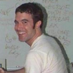
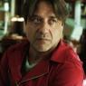

FONDATEURS

Tom
Après avoir perdu des millions d’amis sur Myspace, Tom trouve une idée lumineuse en proposant à deux camarades de créer Serv’Drone.

Jonathan
Ne vous fiez pas à son jeune âge, Jonathan n’attend pas et se lance très tôt dans les nouvelles technologies avec Serv’Drone.

Arturo
Après une sombre histoire de braquage en Espagne, Arturo a décidé de rejoindre Serv’Drone pour assurer la sécurité des concitoyens.